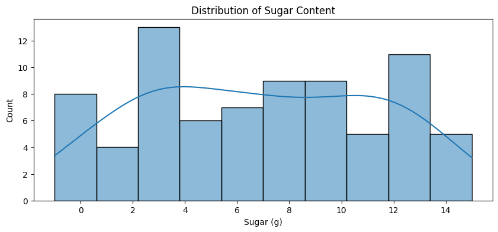
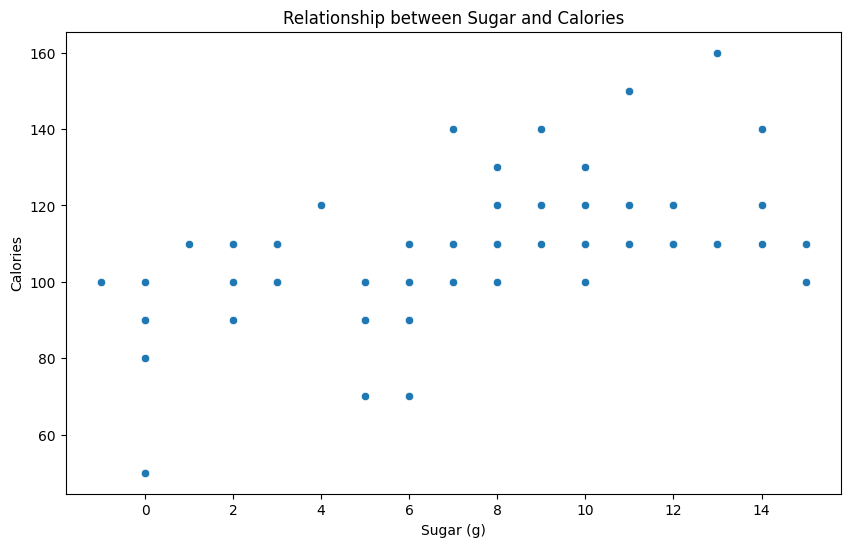
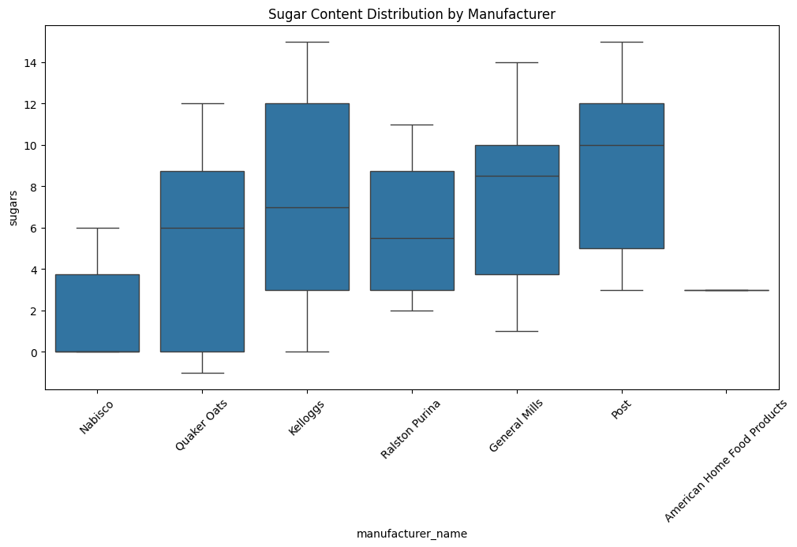

You’re working as a data analyst at a cereal marketing company in New York.
In a strategy meeting, the marketing director tells you that in 2018, the US weight loss industry was worth over $72 Billion dollars, growing 4% compared to the previous year.
In contrast, sales of cold cereal fell 6% to $8.5 billion during the same time period.
Cereal executives have approached the marketing company asking how they can somehow tap into the weight loss market growth to boost the sales of their cereal brands.
Your assignment is to analyze a dataset of nutritional information for major US cereals, and calculate some metrics that can be used by the marketing team.
Part 1: Import Pandas and load the data
Remember to import Pandas the conventional way. If you’ve forgotten how, you may want to review Data Exploration 01.
The dataset for this exploration is stored at the following url:
There are lots of ways to load data into your workspace. The easiest way in this case is to ask Pandas to do it for you.
Initial Data Analysis
Once you’ve loaded the data, it’s a good idea to poke around a little bit to find out what you’re dealing with.
Some questions you might ask include:
What does the data look like?
What kind of data is in each column?
Do any of the columns have missing values?
# Part 1: Enter your code below to import Pandas according to the# conventional method. Then load the dataset into a Pandas dataframe.# Write any code needed to explore the data by seeing what the first few# rows look like. Then display a technical summary of the data to determine# the data types of each column, and which columns have missing data.import pandas as pdurl ="https://raw.githubusercontent.com/byui-cse/cse450-course/master/data/cereal.csv"df = pd.read_csv(url)print(df.head())print(df.info())
The marketing team has determined that when choosing a cereal, consumers are most interested in calories, sugars, fiber, fat, and protein.
First, let’s calcuate some summary statistics for these categories across the entire dataset. We’re particularly intrested in the mean, median, standard deviation, min, and max values.
# Part 2: Enter your code below to calculate summary statistics for the# calories, sugars, fiber, fat, and protein features.target_cols = ['calories', 'sugars', 'fiber', 'fat', 'protein']summary_stats = df[target_cols].describe().loc[['mean', '50%', 'std', 'min', 'max']]summary_stats.rename(index={'50%': 'median'}, inplace=True)print(summary_stats)
calories sugars fiber fat protein
mean 106.883117 6.922078 2.151948 1.012987 2.545455
median 110.000000 7.000000 2.000000 1.000000 3.000000
std 19.484119 4.444885 2.383364 1.006473 1.094790
min 50.000000 -1.000000 0.000000 0.000000 1.000000
max 160.000000 15.000000 14.000000 5.000000 6.000000
Part 3: Transform Data
To make analysis easier, you want to convert the manufacturer codes used in the dataset to the manufacturer names.
First, display the count of each manufacturer code value used in the dataset (found in the mfr column).
A = American Home Food Products
G = General Mills
K = Kelloggs
N = Nabisco
P = Post
Q = Quaker Oats
R = Ralston Purina
Note: While the tutorial linked above uses the replace function, using the map function instead can often be much faster and more memory efficient, especially for large datasets.
# Display the count of values for the manufacturer code ("mfr" column), then# create a new column containing the appropriate manufacturer names.print(df['mfr'].value_counts())mfr_map = {'A': 'American Home Food Products','G': 'General Mills','K': 'Kelloggs','N': 'Nabisco','P': 'Post','Q': 'Quaker Oats','R': 'Ralston Purina'}df['manufacturer_name'] = df['mfr'].map(mfr_map)print(df[['mfr', 'manufacturer_name']].head())
mfr
K 23
G 22
P 9
R 8
Q 8
N 6
A 1
Name: count, dtype: int64
mfr manufacturer_name
0 N Nabisco
1 Q Quaker Oats
2 K Kelloggs
3 K Kelloggs
4 R Ralston Purina
Part 4: Visualization
Let’s do some more data exploration visually.
Import your visualization library of choice and set any needed configuration options.
# Import your visualization libraryimport matplotlib.pyplot as pltimport seaborn as sns
Sugar Distribution
Marketing tells us that their surveys have revealed that sugar content is the number one concern of consumers when choosing cereal.
They would like to see the following visualizations:
A histogram plot of the sugar content in all cereals.
A scatter plot showing the relationship between sugar and calories.
A box plot showing the distribution of sugar content by manufacturer.
# Create the three visualzations requested by the the marketing teamplt.figure(figsize=(10, 4))sns.histplot(df['sugars'], bins=10, kde=True)plt.title('Distribution of Sugar Content')plt.xlabel('Sugar (g)')plt.show()plt.figure(figsize=(10, 6))sns.scatterplot(data=df, x='sugars', y='calories')plt.title('Relationship between Sugar and Calories')plt.xlabel('Sugar (g)')plt.ylabel('Calories')plt.show()plt.figure(figsize=(12, 6))sns.boxplot(data=df, x='manufacturer_name', y='sugars')plt.xticks(rotation=45)plt.title('Sugar Content Distribution by Manufacturer')plt.show()



Part 5: Dietary Calculations
The marketing team has been able to arrange a partnership between the popular Weight Watchers diet brand and Kelloggs cereal.
The Weight Watchers system assigns a point value to each food, and participants in the program are allotted a certain number of points each day.
Kelloggs Weight Watchers Points Summary:
mean 4.217391
median 5.000000
std 1.241572
min 1.000000
max 7.000000
Name: ww_points, dtype: float64
🌟 Above and Beyond 🌟
The marketing team is pleased with what you’ve accomplished so far. They have a meeting with top cereal executives in the morning, and they’d like you to do as many of the following additional tasks as you have time for:
Weight Watchers used to have an older points system that used this formula: (calories / 50) + (fat / 12) - (fiber / 5), but only the first 4 grams of fiber were included in the calculation. For comparison’s sake, create an additional column with the calculation for the old points system.
Marketing really likes the boxplot of the sugar content for each cereal, they’d like similar plots for calories and fat, but using different color schemes for each chart.